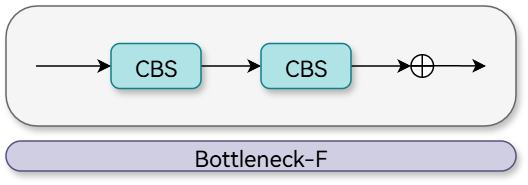
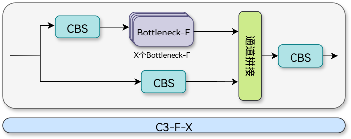
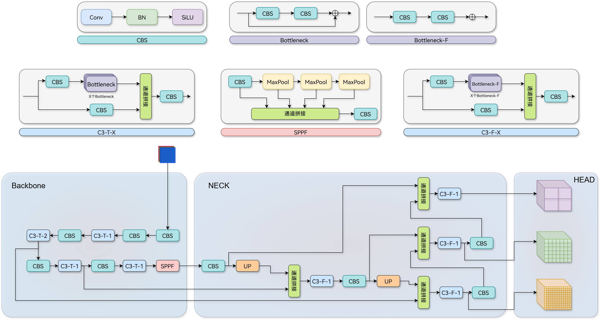
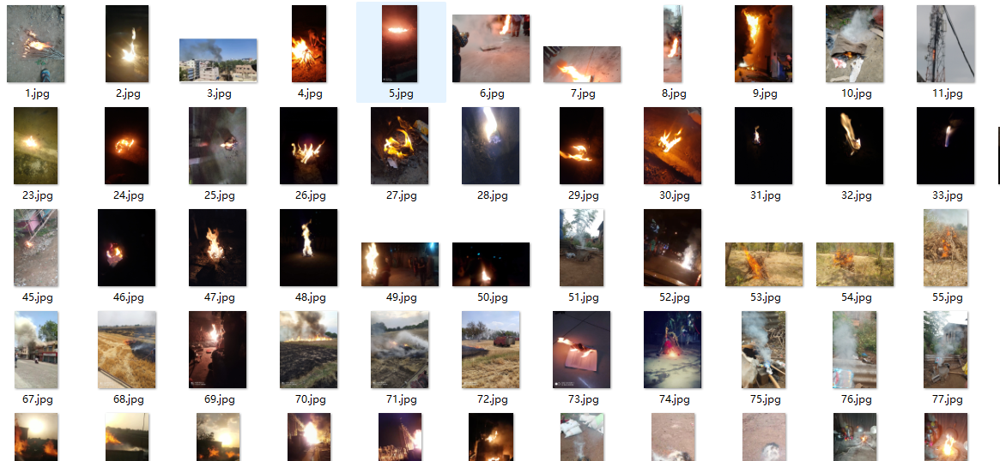
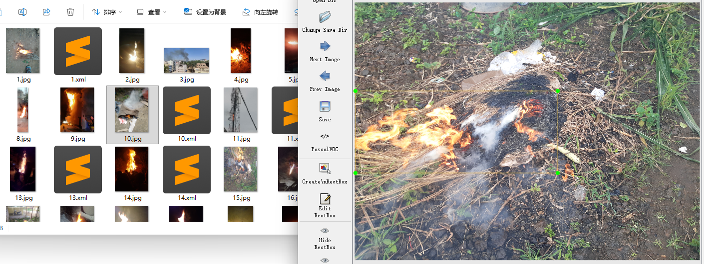
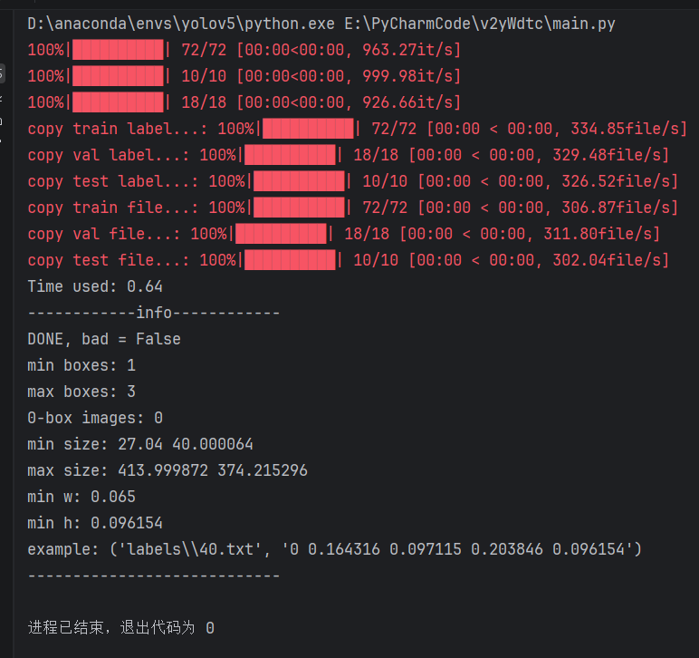
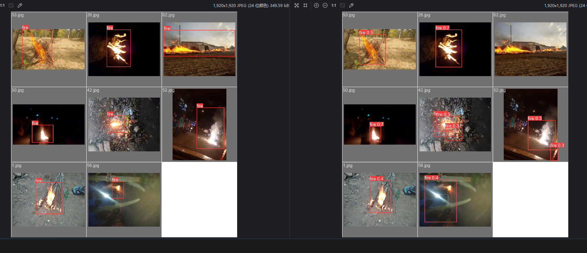
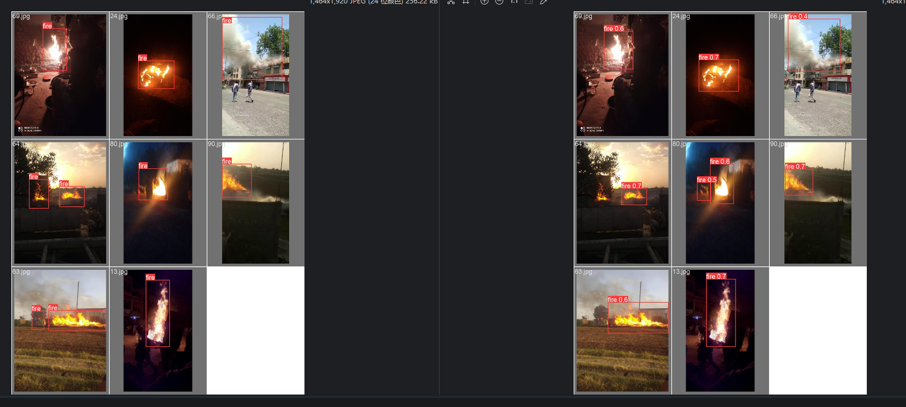
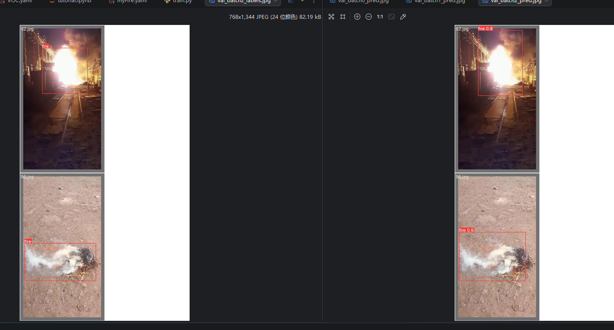

# YOLOv5 with Ultralytics YOLOv5 源码解析
# 工程实现
【ultralytics-YOLOv5】：https://github.com/ultralytics/yolov5
# 引言
本篇文章将一改往日风格，先从工程部署再到细节讨论。YOLOv5 之所以能成为很多工程师的首选，不仅是因为它性能强悍，更因为它在工程化上的极致友好：从环境配置、自动锚框计算到多平台导出，几乎做到了开箱即用。
我身为软件工程专业的学生，我想说 YOLOv5 真正打动我的，并不是那几项漂亮的 mAP 指标，而是它背后那种工程优先的设计思维。
在很多传统的深度学习项目中，我们常常会遇到这样的情况：论文很好看，模型结构也很优雅，但一到实际部署阶段，各种环境依赖冲突、版本问题、导出失败、推理速度不稳定接踵而至。而 YOLOv5 给我的感觉更像是一个 “成熟的后端项目”—— 结构清晰、模块解耦、配置集中管理，甚至连日志输出和参数管理都做得非常规范。
如果用我们熟悉的 SpringBoot 思维去类比：
train.py像是启动类models/目录像是核心业务模块utils/像是工具类封装层data.yaml类似于 application.yml 配置文件- 导出 ONNX / TensorRT 就像是多环境打包部署
这种工程结构，让人几乎不用反复翻源码，就可以快速定位问题。
YOLOv5 的脚本里充满了 “自动化” 的影子：
- Auto-Check： 每次运行都会自动检查
requirements，甚至能自动下载缺失的字体和预训练权重。 - Auto-Anchor： 它深知开发者懒得去算 聚类，所以内置了基于你私有数据集的 Anchor 自动计算逻辑。
- Logging： 原生集成 Tensorboard，这种可观测性设计是大型工程项目的标配。
本文致力于从源码出发，剖析模型、训练手段、日志实践、以及各种工程方法，以便用在未来的学术和工程之中，顺便熟悉 Visio 的使用方法，让我们开始吧。
# 快速开始
从仓库克隆：
git clone https://github.com/ultralytics/yolov5.git |
安装环境，推荐 python3.9，torch2.5.1，pytorch-cuda11.8：
conda install -c pytorch -c nvidia -c conda-forge pytorch torchvision pytorch-cuda=11.8 ultralytics |
自动检查：
import torch | |
import utils | |
display = utils.notebook_init() # checks |
预测：
python detect.py --weights yolov5s.pt --img 1000 --conf 0.25 --source 0 |
其余验证、训练和可视化可在 tutorial.ipynb 中查看。
# 看看模型
运行 yolo.py 得到如下结果：
from n params module arguments | |
0 -1 1 3520 models.common.Conv [3, 32, 6, 2, 2] | |
1 -1 1 18560 models.common.Conv [32, 64, 3, 2] | |
2 -1 1 18816 models.common.C3 [64, 64, 1] | |
3 -1 1 73984 models.common.Conv [64, 128, 3, 2] | |
4 -1 2 115712 models.common.C3 [128, 128, 2] | |
5 -1 1 295424 models.common.Conv [128, 256, 3, 2] | |
6 -1 3 625152 models.common.C3 [256, 256, 3] | |
7 -1 1 1180672 models.common.Conv [256, 512, 3, 2] | |
8 -1 1 1182720 models.common.C3 [512, 512, 1] | |
9 -1 1 656896 models.common.SPPF [512, 512, 5] | |
10 -1 1 131584 models.common.Conv [512, 256, 1, 1] | |
11 -1 1 0 torch.nn.modules.upsampling.Upsample [None, 2, 'nearest'] | |
12 [-1, 6] 1 0 models.common.Concat [1] | |
13 -1 1 361984 models.common.C3 [512, 256, 1, False] | |
14 -1 1 33024 models.common.Conv [256, 128, 1, 1] | |
15 -1 1 0 torch.nn.modules.upsampling.Upsample [None, 2, 'nearest'] | |
16 [-1, 4] 1 0 models.common.Concat [1] | |
17 -1 1 90880 models.common.C3 [256, 128, 1, False] | |
18 -1 1 147712 models.common.Conv [128, 128, 3, 2] | |
19 [-1, 14] 1 0 models.common.Concat [1] | |
20 -1 1 296448 models.common.C3 [256, 256, 1, False] | |
21 -1 1 590336 models.common.Conv [256, 256, 3, 2] | |
22 [-1, 10] 1 0 models.common.Concat [1] | |
23 -1 1 1182720 models.common.C3 [512, 512, 1, False] | |
24 [17, 20, 23] 1 229245 Detect [80, [[10, 13, 16, 30, 33, 23], [30, 61, 62, 45, 59, 119], [116, 90, 156, 198, 373, 326]], [128, 256, 512]] | |
YOLOv5s summary: 214 layers, 7235389 parameters, 7235389 gradients | |
Fusing layers... | |
YOLOv5s summary: 157 layers, 7225885 parameters, 7225885 gradients |
首先观察到 YOLOv5s summary 输出一次之后又输出了一次，提示： Fusing layers...
融合前：
Conv
├── conv
├── bn
└── act
融合后：
Conv
├── conv (已吸收 bn)
└── act
def fuse(self): | |
"""Fuses Conv2d() and BatchNorm2d() layers in the model to improve inference speed.""" | |
LOGGER.info("Fusing layers... ") | |
for m in self.model.modules(): | |
if isinstance(m, (Conv, DWConv)) and hasattr(m, "bn"): | |
m.conv = fuse_conv_and_bn(m.conv, m.bn) # update conv | |
delattr(m, "bn") # remove batchnorm | |
m.forward = m.forward_fuse # update forward | |
self.info() | |
return self |
fuse 用于加速推理。
def fuse_conv_and_bn(conv, bn): | |
"""Fuses Conv2d and BatchNorm2d layers into a single Conv2d layer. | |
See https://tehnokv.com/posts/fusing-batchnorm-and-conv/. | |
""" | |
fusedconv = ( | |
nn.Conv2d( | |
conv.in_channels, | |
conv.out_channels, | |
kernel_size=conv.kernel_size, | |
stride=conv.stride, | |
padding=conv.padding, | |
dilation=conv.dilation, | |
groups=conv.groups, | |
bias=True, | |
) | |
.requires_grad_(False) | |
.to(conv.weight.device) | |
) | |
# Prepare filters | |
w_conv = conv.weight.clone().view(conv.out_channels, -1) | |
w_bn = torch.diag(bn.weight.div(torch.sqrt(bn.eps + bn.running_var))) | |
fusedconv.weight.copy_(torch.mm(w_bn, w_conv).view(fusedconv.weight.shape)) | |
# Prepare spatial bias | |
b_conv = torch.zeros(conv.weight.size(0), device=conv.weight.device) if conv.bias is None else conv.bias | |
b_bn = bn.bias - bn.weight.mul(bn.running_mean).div(torch.sqrt(bn.running_var + bn.eps)) | |
fusedconv.bias.copy_(torch.mm(w_bn, b_conv.reshape(-1, 1)).reshape(-1) + b_bn) | |
return fusedconv |
# YOLOv5——n/s/m/l/x？

# 基于 YOLOv5s 继续讨论
观察输出可以看到如下组件：
- Conv
- C3
- SPPF
- Upsample（nearest）
- Concat
- Detect
下面基于此来继续讨论。
# Conv
class Conv(nn.Module): | |
"""Applies a convolution, batch normalization, and activation function to an input tensor in a neural network.""" | |
default_act = nn.SiLU() # default activation | |
def __init__(self, c1, c2, k=1, s=1, p=None, g=1, d=1, act=True): | |
"""Initializes a standard convolution layer with optional batch normalization and activation.""" | |
super().__init__() | |
self.conv = nn.Conv2d(c1, c2, k, s, autopad(k, p, d), groups=g, dilation=d, bias=False) | |
self.bn = nn.BatchNorm2d(c2) | |
self.act = self.default_act if act is True else act if isinstance(act, nn.Module) else nn.Identity() | |
def forward(self, x): | |
"""Applies a convolution followed by batch normalization and an activation function to the input tensor `x`.""" | |
return self.act(self.bn(self.conv(x))) | |
def forward_fuse(self, x): | |
"""Applies a fused convolution and activation function to the input tensor `x`.""" | |
return self.act(self.conv(x)) |
Conv 组件不是纯粹的卷积，它是由以卷积为核心的一组操作构成的，源码中说到：对神经网络中的输入张量应用卷积、批处理归一化和激活函数。
其中： self.act = self.default_act if act is True else act if isinstance(act, nn.Module) else nn.Identity() 这一段非常值得我们学习，如果 act=True 则使用 default_act ，否则就要判断传过来的 act 是否是 nn.Module ( isinstance(act, nn.Module) )，是的话就用新传过来的，否则则使用 nn.Identity() 直接原样输出。

# C3
YOLOv5s 可以支持各种 C3 变体，但官方默认配置只用基础 C3，C3 是一个系列，其中有 C3x、C3TR、C3SPP、C3Ghost，他们都继承 C3
C3- 基础 CSP 瓶颈模块C3x- 使用 CrossConv 交叉卷积的 C3 变体C3TR- 使用 TransformerBlock 的 C3 变体C3SPP- 使用 SPP 空间金字塔池化的 C3 变体C3Ghost- 使用 GhostBottleneck 幽灵残差的 C3 变体
YOLOv5s 中使用的是基础的 C3 模块，让我们先来看看 C3：
class C3(nn.Module): | |
"""Implements a CSP Bottleneck module with three convolutions for enhanced feature extraction in neural networks.""" | |
def __init__(self, c1, c2, n=1, shortcut=True, g=1, e=0.5): | |
"""Initializes C3 module with options for channel count, bottleneck repetition, shortcut usage, group | |
convolutions, and expansion. | |
""" | |
super().__init__() | |
c_ = int(c2 * e) # hidden channels | |
self.cv1 = Conv(c1, c_, 1, 1) | |
self.cv2 = Conv(c1, c_, 1, 1) | |
self.cv3 = Conv(2 * c_, c2, 1) # optional act=FReLU(c2) | |
self.m = nn.Sequential(*(Bottleneck(c_, c_, shortcut, g, e=1.0) for _ in range(n))) | |
def forward(self, x): | |
"""Performs forward propagation using concatenated outputs from two convolutions and a Bottleneck sequence.""" | |
return self.cv3(torch.cat((self.m(self.cv1(x)), self.cv2(x)), 1)) |
C3 见名知意，是一个以三个卷积为核心的特征提取块在向前传播中依赖了 Bottleneck ，其中 nn.Sequential(*(Bottleneck(c_, c_, shortcut, g, e=1.0) for _ in range(n))) 是一个语法糖，让我们一步步拆解，在外层的 nn.Sequential() 是一个序列组装，先不看，内层的 *(xxx) 意为由多个 xxx 组成，但到底由多少个 xxx 组成取决于内层 Bottleneck(c_, c_, shortcut, g, e=1.0) for _ in range(n) 中 n 的大小决定。说了这么多， Bottleneck 是啥？
class Bottleneck(nn.Module): | |
"""A bottleneck layer with optional shortcut and group convolution for efficient feature extraction.""" | |
def __init__(self, c1, c2, shortcut=True, g=1, e=0.5): | |
"""Initializes a standard bottleneck layer with optional shortcut and group convolution, supporting channel expansion. | |
""" | |
super().__init__() | |
c_ = int(c2 * e) # hidden channels | |
self.cv1 = Conv(c1, c_, 1, 1) | |
self.cv2 = Conv(c_, c2, 3, 1, g=g) | |
self.add = shortcut and c1 == c2 | |
def forward(self, x): | |
"""Processes input through two convolutions, optionally adds shortcut if channel dimensions match; input is a tensor. | |
""" | |
return x + self.cv2(self.cv1(x)) if self.add else self.cv2(self.cv1(x)) |
观察 return x + self.cv2(self.cv1(x)) if self.add else self.cv2(self.cv1(x)) 显然这是一个残差模块，通过 add 控制开启与关闭。一般来说前后不改变通道数， c_ 是前后通道数的一半。
下面还有一个 Bottleneck，我称之为 Bottleneck-F，这是不启用残差链接的 Bottleneck。
那自然有 C3-F-X
# SPPF
SPPF 通过复用中间结果，把 3 次独立池化变成了 3 次串联池化，计算量从 O (3k²) 降为 O (k²)，速度快了 2-3 倍，效果几乎不变。
class SPPF(nn.Module): | |
"""Implements a fast Spatial Pyramid Pooling (SPPF) layer for efficient feature extraction in YOLOv5 models.""" | |
def __init__(self, c1, c2, k=5): | |
"""Initializes YOLOv5 SPPF layer with given channels and kernel size for YOLOv5 model, combining convolution and | |
max pooling. | |
Equivalent to SPP(k=(5, 9, 13)). | |
""" | |
super().__init__() | |
c_ = c1 // 2 # hidden channels | |
self.cv1 = Conv(c1, c_, 1, 1) | |
self.cv2 = Conv(c_ * 4, c2, 1, 1) | |
self.m = nn.MaxPool2d(kernel_size=k, stride=1, padding=k // 2) | |
def forward(self, x): | |
"""Processes input through a series of convolutions and max pooling operations for feature extraction.""" | |
x = self.cv1(x) | |
with warnings.catch_warnings(): | |
warnings.simplefilter("ignore") # suppress torch 1.9.0 max_pool2d() warning | |
y1 = self.m(x) | |
y2 = self.m(y1) | |
return self.cv2(torch.cat((x, y1, y2, self.m(y2)), 1)) |
这个 cv1 和 cv2 中的 k 与 s 全是 1，完全不改变特征图大小，只改变通道数。通道拼接这里接受了四部分的输入，所以 self.cv2 = Conv(c_ * 4, c2, 1, 1) 中写道： c_ * 4 ，其中 c_ 是第一个 CBS 的输出通道数。
# Focus——Focus 为什么被弃用？
YOLOv5 v6.0 版本（2021 年 10 月）是一个分水岭：Focus 的切片操作虽然减少了参数量，但在 GPU/TPU 上不友好。取而代之的是 6x6 卷积。
from n params module arguments | |
0 -1 1 3520 models.common.Conv [3, 32, 6, 2, 2] |
[3, 32, 6, 2, 2] 输入 RGB 彩色图像，3 通道，第一层输出 32 个特征图，其中是 6×6 的卷积核，每次移动 2 像素，特征图尺寸减半，四周补 2 圈 0，保持尺寸计算正确。假如输入 640×640×3 ，输出是 320×320×32 ，因为步长 2，尺寸减半。
class Focus(nn.Module): | |
"""Focuses spatial information into channel space using slicing and convolution for efficient feature extraction.""" | |
def __init__(self, c1, c2, k=1, s=1, p=None, g=1, act=True): | |
"""Initializes Focus module to concentrate width-height info into channel space with configurable convolution | |
parameters. | |
""" | |
super().__init__() | |
self.conv = Conv(c1 * 4, c2, k, s, p, g, act=act) | |
# self.contract = Contract(gain=2) | |
def forward(self, x): | |
"""Processes input through Focus mechanism, reshaping (b,c,w,h) to (b,4c,w/2,h/2) then applies convolution.""" | |
return self.conv(torch.cat((x[..., ::2, ::2], x[..., 1::2, ::2], x[..., ::2, 1::2], x[..., 1::2, 1::2]), 1)) | |
# return self.conv(self.contract(x)) |
# Upsample
Upsample 使用的是 nn.Upsample(scale_factor=2, mode="nearest") ，这个没什么好说的。
# Concat
class Concat(nn.Module): | |
"""Concatenates tensors along a specified dimension for efficient tensor manipulation in neural networks.""" | |
def __init__(self, dimension=1): | |
"""Initializes a Concat module to concatenate tensors along a specified dimension.""" | |
super().__init__() | |
self.d = dimension | |
def forward(self, x): | |
"""Concatenates a list of tensors along a specified dims; `x` is a list of tensors, `dimension` is an int.""" | |
return torch.cat(x, self.d) |
Concat 的注释很清晰，它将一组张量列表串接到指定的 dim 上；“x” 是张量列表，“维度” 是整数。
# Detect
class Detect(nn.Module): | |
"""YOLOv5 Detect head for processing input tensors and generating detection outputs in object detection models.""" | |
stride = None # strides computed during build | |
dynamic = False # force grid reconstruction | |
export = False # export mode | |
def __init__(self, nc=80, anchors=(), ch=(), inplace=True): | |
"""Initializes YOLOv5 detection layer with specified classes, anchors, channels, and inplace operations.""" | |
super().__init__() | |
self.nc = nc # number of classes | |
self.no = nc + 5 # number of outputs per anchor | |
self.nl = len(anchors) # number of detection layers | |
self.na = len(anchors[0]) // 2 # number of anchors | |
self.grid = [torch.empty(0) for _ in range(self.nl)] # init grid | |
self.anchor_grid = [torch.empty(0) for _ in range(self.nl)] # init anchor grid | |
self.register_buffer("anchors", torch.tensor(anchors).float().view(self.nl, -1, 2)) # shape(nl,na,2) | |
self.m = nn.ModuleList(nn.Conv2d(x, self.no * self.na, 1) for x in ch) # output conv | |
self.inplace = inplace # use inplace ops (e.g. slice assignment) | |
def forward(self, x): | |
"""Processes input through YOLOv5 layers, altering shape for detection: `x(bs, 3, ny, nx, 85)`.""" | |
z = [] # inference output | |
for i in range(self.nl): | |
x[i] = self.m[i](x[i]) # conv | |
bs, _, ny, nx = x[i].shape # x(bs,255,20,20) to x(bs,3,20,20,85) | |
x[i] = x[i].view(bs, self.na, self.no, ny, nx).permute(0, 1, 3, 4, 2).contiguous() | |
if not self.training: # inference | |
if self.dynamic or self.grid[i].shape[2:4] != x[i].shape[2:4]: | |
self.grid[i], self.anchor_grid[i] = self._make_grid(nx, ny, i) | |
if isinstance(self, Segment): # (boxes + masks) | |
xy, wh, conf, mask = x[i].split((2, 2, self.nc + 1, self.no - self.nc - 5), 4) | |
xy = (xy.sigmoid() * 2 + self.grid[i]) * self.stride[i] # xy | |
wh = (wh.sigmoid() * 2) ** 2 * self.anchor_grid[i] # wh | |
y = torch.cat((xy, wh, conf.sigmoid(), mask), 4) | |
else: # Detect (boxes only) | |
xy, wh, conf = x[i].sigmoid().split((2, 2, self.nc + 1), 4) | |
xy = (xy * 2 + self.grid[i]) * self.stride[i] # xy | |
wh = (wh * 2) ** 2 * self.anchor_grid[i] # wh | |
y = torch.cat((xy, wh, conf), 4) | |
z.append(y.view(bs, self.na * nx * ny, self.no)) | |
return x if self.training else (torch.cat(z, 1),) if self.export else (torch.cat(z, 1), x) | |
def _make_grid(self, nx=20, ny=20, i=0, torch_1_10=check_version(torch.__version__, "1.10.0")): | |
"""Generates a mesh grid for anchor boxes with optional compatibility for torch versions < 1.10.""" | |
d = self.anchors[i].device | |
t = self.anchors[i].dtype | |
shape = 1, self.na, ny, nx, 2 # grid shape | |
y, x = torch.arange(ny, device=d, dtype=t), torch.arange(nx, device=d, dtype=t) | |
yv, xv = torch.meshgrid(y, x, indexing="ij") if torch_1_10 else torch.meshgrid(y, x) # torch>=0.7 compatibility | |
grid = torch.stack((xv, yv), 2).expand(shape) - 0.5 # add grid offset, i.e. y = 2.0 * x - 0.5 | |
anchor_grid = (self.anchors[i] * self.stride[i]).view((1, self.na, 1, 1, 2)).expand(shape) | |
return grid, anchor_grid |
这段代码是负责目标检测的，核心在于看懂 forward 函数：
def forward(self, x): | |
"""Processes input through YOLOv5 layers, altering shape for detection: `x(bs, 3, ny, nx, 85)`.""" | |
z = [] # inference output | |
for i in range(self.nl): | |
x[i] = self.m[i](x[i]) # conv | |
bs, _, ny, nx = x[i].shape # x(bs,255,20,20) to x(bs,3,20,20,85) | |
x[i] = x[i].view(bs, self.na, self.no, ny, nx).permute(0, 1, 3, 4, 2).contiguous() | |
if not self.training: # inference | |
if self.dynamic or self.grid[i].shape[2:4] != x[i].shape[2:4]: | |
self.grid[i], self.anchor_grid[i] = self._make_grid(nx, ny, i) | |
if isinstance(self, Segment): # (boxes + masks) | |
xy, wh, conf, mask = x[i].split((2, 2, self.nc + 1, self.no - self.nc - 5), 4) | |
xy = (xy.sigmoid() * 2 + self.grid[i]) * self.stride[i] # xy | |
wh = (wh.sigmoid() * 2) ** 2 * self.anchor_grid[i] # wh | |
y = torch.cat((xy, wh, conf.sigmoid(), mask), 4) | |
else: # Detect (boxes only) | |
xy, wh, conf = x[i].sigmoid().split((2, 2, self.nc + 1), 4) | |
xy = (xy * 2 + self.grid[i]) * self.stride[i] # xy | |
wh = (wh * 2) ** 2 * self.anchor_grid[i] # wh | |
y = torch.cat((xy, wh, conf), 4) | |
z.append(y.view(bs, self.na * nx * ny, self.no)) | |
return x if self.training else (torch.cat(z, 1),) if self.export else (torch.cat(z, 1), x) |
x (bs, 3, ny, nx, 85)，85: 每个 anchor 的预测值，nx: 特征图宽度方向网格数，ny: 特征图高度方向网格数，3: 每个网格点的 anchor 数量， bs: batch size。
85 维向量 = [tx, ty, tw, th, obj_conf, cls1, cls2, …, cls80]
├──4 坐标──┤ ├─1 置信─┤ ├──80 类别概率──┤
self.nl 是 anchors 的数量，向前传播首先进入： for i in range(self.nl): ，3 个检测分支通过 1 个 for 循环并行处理。
Detect 初始化时： def __init__(self, nc=80, anchors=(), ch=(), inplace=True) ，查看日志可以看到 [80, [[10, 13, 16, 30, 33, 23], [30, 61, 62, 45, 59, 119], [116, 90, 156, 198, 373, 326]], [128, 256, 512]] ，80 分类，三组检测框，对应三个上游通道数 [128, 256, 512] 。这是 3 组锚框，每组 3 个，一共 9 个锚框，分别对应 P3、P4、P5 三个检测层
self.na = len(anchors[0]) // 2 |
anchors 的存储格式是 [w1, h1, w2, h2, w3, h3] ，每两个数字组成一个 anchor。所以我们知道， for i in range(self.nl) 是为三个检测头准备的。
继续向下执行，这两行代码是 YOLOv5 检测头的变形魔法：
bs, _, ny, nx = x[i].shape # x(bs,255,20,20) to x(bs,3,20,20,85) | |
x[i] = x[i].view(bs, self.na, self.no, ny, nx).permute(0, 1, 3, 4, 2).contiguous() |
原始：(1, 255, 20, 20) batch=1, 通道 = 255, 高 = 20, 宽 = 20
view 重塑：
.view(1, 3, 85, 20, 20) | |
│ │ │ │ │ | |
│ │ │ │ └── 宽度网格数 (nx) | |
│ │ │ └────── 高度网格数 (ny) | |
│ │ └────────── 每个anchor的预测值 (no=85) | |
│ └───────────── 每个网格的anchor数 (na=3) | |
└──────────────── batch size (bs=1) | |
255 = 3×85 |
permute 调整位置：
.permute(0, 1, 3, 4, 2) | |
(1, 3, 20, 20, 85) | |
─┬─ ─┬─ ─┬─ ─┬─ ─┬─ | |
│ │ │ │ └── 检测值 (坐标+置信度+类别) | |
│ │ │ └────── 宽度网格 (nx) | |
│ │ └────────── 高度网格 (ny) | |
│ └────────────── anchor索引 (na) | |
└────────────────── batch (bs) |
contiguous 保证内存连续。
为了方便观察输出，可以打印一下：print (x [i].shape, “这是：”, i)
torch.Size ([1, 255, 80, 80]) 这是： 0
torch.Size ([1, 255, 40, 40]) 这是： 1
torch.Size ([1, 255, 20, 20]) 这是： 2
return x if self.training else (torch.cat(z, 1),) if self.export else (torch.cat(z, 1), x) |
训练时： return x ，直接去算 Loss。
推理时： return (torch.cat(z, 1), x) ，返回检测结果 + 特征图
这个 z 从哪里来？这里写道 if not self.training …
if not self.training: # inference | |
if self.dynamic or self.grid[i].shape[2:4] != x[i].shape[2:4]: | |
self.grid[i], self.anchor_grid[i] = self._make_grid(nx, ny, i) | |
if isinstance(self, Segment): # (boxes + masks) | |
xy, wh, conf, mask = x[i].split((2, 2, self.nc + 1, self.no - self.nc - 5), 4) | |
xy = (xy.sigmoid() * 2 + self.grid[i]) * self.stride[i] # xy | |
wh = (wh.sigmoid() * 2) ** 2 * self.anchor_grid[i] # wh | |
y = torch.cat((xy, wh, conf.sigmoid(), mask), 4) | |
else: # Detect (boxes only) | |
xy, wh, conf = x[i].sigmoid().split((2, 2, self.nc + 1), 4) | |
xy = (xy * 2 + self.grid[i]) * self.stride[i] # xy | |
wh = (wh * 2) ** 2 * self.anchor_grid[i] # wh | |
y = torch.cat((xy, wh, conf), 4) | |
z.append(y.view(bs, self.na * nx * ny, self.no)) |
推理时反向计算预测框。
# 先提一下 parse_model
在 yaml 中， [-1, 3, C3, [128]], 只给了一个参数 128，而我我们前面说到的 C3 至少需要两个，parse_model 回答我们：
c1, c2 = ch[f], args[0] | |
if c2 != no: # if not output | |
c2 = make_divisible(c2 * gw, ch_mul) |
c2 来自 yaml，c1 从上一层自动获取：
for i, (f, n, m, args) in enumerate(d["backbone"] + d["head"]): # from, number, module, args |
# 激动人心的时刻 —— 组装
这就是 YOLOv5s 的构成：
# Auto-Anchor 自适应锚框计算
YOLOv5 的自适应锚框计算主要写在 utils/autoanchor.py 文件里：
@TryExcept(f"{PREFIX}ERROR") | |
def check_anchors(dataset, model, thr=4.0, imgsz=640): | |
"""Evaluates anchor fit to dataset and adjusts if necessary, supporting customizable threshold and image size.""" | |
m = model.module.model[-1] if hasattr(model, "module") else model.model[-1] # Detect() | |
shapes = imgsz * dataset.shapes / dataset.shapes.max(1, keepdims=True) | |
scale = np.random.uniform(0.9, 1.1, size=(shapes.shape[0], 1)) # augment scale | |
wh = torch.tensor(np.concatenate([l[:, 3:5] * s for s, l in zip(shapes * scale, dataset.labels)])).float() # wh | |
def metric(k): # compute metric | |
"""Computes ratio metric, anchors above threshold, and best possible recall for YOLOv5 anchor evaluation.""" | |
r = wh[:, None] / k[None] | |
x = torch.min(r, 1 / r).min(2)[0] # ratio metric | |
best = x.max(1)[0] # best_x | |
aat = (x > 1 / thr).float().sum(1).mean() # anchors above threshold | |
bpr = (best > 1 / thr).float().mean() # best possible recall | |
return bpr, aat | |
stride = m.stride.to(m.anchors.device).view(-1, 1, 1) # model strides | |
anchors = m.anchors.clone() * stride # current anchors | |
bpr, aat = metric(anchors.cpu().view(-1, 2)) | |
s = f"\n{PREFIX}{aat:.2f} anchors/target, {bpr:.3f} Best Possible Recall (BPR). " | |
if bpr > 0.98: # threshold to recompute | |
LOGGER.info(f"{s}Current anchors are a good fit to dataset ✅") | |
else: | |
LOGGER.info(f"{s}Anchors are a poor fit to dataset ⚠️, attempting to improve...") | |
na = m.anchors.numel() // 2 # number of anchors | |
anchors = kmean_anchors(dataset, n=na, img_size=imgsz, thr=thr, gen=1000, verbose=False) | |
new_bpr = metric(anchors)[0] | |
if new_bpr > bpr: # replace anchors | |
anchors = torch.tensor(anchors, device=m.anchors.device).type_as(m.anchors) | |
m.anchors[:] = anchors.clone().view_as(m.anchors) | |
check_anchor_order(m) # must be in pixel-space (not grid-space) | |
m.anchors /= stride | |
s = f"{PREFIX}Done ✅ (optional: update model *.yaml to use these anchors in the future)" | |
else: | |
s = f"{PREFIX}Done ⚠️ (original anchors better than new anchors, proceeding with original anchors)" | |
LOGGER.info(s) |
这个可以称之为拉起函数，在训练开始时，这个函数会登场。它使用一个关键指标 BPR 最佳可能召回率 来评估当前锚框的好坏。BPR 衡量的是数据集中有多少真实框能很好地匹配预设的锚框。如果 BPR 大于等于 0.98，说明锚框已经够用了，流程结束。如果 BPR 小于 0.98，说明锚框不太合适，代码就会自动启动锚框优化流程。
这个自适应功能是可选的。在训练脚本 train.py 中，有一个参数叫 --noautoanchor 。默认情况下它是 False ，意味着自适应锚框功能是开启的。如果你想使用自己预设的锚框，不让程序自动调整，可以在训练命令中加上 --noautoanchor 来关闭它。
# Loss 损失函数
YOLOv5 的损失函数计算主要写在 utils/loss.py 文件里。
ComputeLoss 是拉起类，它协调了 YOLOv5 的三大损失：边界框损失 lbox 、置信度损失 lobj 和分类损失 lcls 。
lcls = torch.zeros(1, device=self.device) # 分类损失 | |
lbox = torch.zeros(1, device=self.device) # 边界框损失 | |
lobj = torch.zeros(1, device=self.device) # 置信度损失 |
然后：
tcls, tbox, indices, anchors = self.build_targets(p, targets) |
这段为每个真实目标找到最匹配的 anchor，确定目标落在哪个网格，返回匹配到的正样本信息。紧接着，逐层计算损失:
for i, pi in enumerate(p): # 遍历 3 个检测层 | |
b, a, gj, gi = indices[i] # 当前层的正样本索引 | |
tobj = torch.zeros(pi.shape[:4], ...) # 初始化置信度目标张量 |
# 正样本损失计算
if n := b.shape[0]: # 如果这一层有正样本 | |
# 提取正样本位置的预测值 | |
pxy, pwh, _, pcls = pi[b, a, gj, gi].split((2, 2, 1, self.nc), 1) | |
# 解码预测坐标 | |
pxy = pxy.sigmoid() * 2 - 0.5 # 中心点偏移 | |
pwh = (pwh.sigmoid() * 2) ** 2 * anchors[i] # 宽高 | |
pbox = torch.cat((pxy, pwh), 1) # 组合成预测框 | |
# 计算 CIoU 损失 | |
iou = bbox_iou(pbox, tbox[i], CIoU=True).squeeze() | |
lbox += (1.0 - iou).mean() # IoU 损失 = 1 - IoU |
# 设置置信度目标值
# 使用 CIoU 作为置信度目标 | |
iou = iou.detach().clamp(0).type(tobj.dtype) | |
tobj[b, a, gj, gi] = iou # 正样本位置填上 IoU 值 |
# 分类损失计算
if self.nc > 1: # 多类别才计算分类损失 | |
t = torch.full_like(pcls, self.cn) # 初始化负标签（默认值） | |
t[range(n), tcls[i]] = self.cp # 正样本位置填上正确类别 | |
lcls += self.BCEcls(pcls, t) # 二值交叉熵损失 |
# 训练网上的数据集
现在手边没啥好设备，我找了一个有 100 张照片的数据集：
这个是检测火焰目标的，下载下来发现没有标注文件，所以我又把这个标注软件拿出来了。
依然是 VOC 数据格式，在这里我要再次安利一下我的小软件：v2yWdtc！
开源地址放这里了：https://github.com/735690757/v2yWdtc
这个可以帮助你过滤一些脏数据，还可以方便的查看标签信息。
然后就是编写 yaml 文件：
path: ./datasets/fire | |
train: | |
- images/train | |
val: | |
- images/val | |
test: | |
- images/test | |
# Classes | |
names: | |
0: fire |
我就框了一个类，那就是火！哈哈！注意路径： ./datasets/fire 这个是相对于训练文件的，千万不要当成相对于 yaml 的就行。然后把数据集放这里：
下面是警告的解决方案：
-
未来警告：FutureWarning:
torch.cuda.amp.autocast(args...)is deprecated. Please usetorch.amp.autocast('cuda', args...)instead 建议使用：with torch.amp.autocast (“cuda”,enabled=amp)
-
【WARNING】 corrupt JPEG restored and saved，使用工具重新读取并保存
from PIL import Image
import osfolder = "./JPEGImages"
for filename in os.listdir(folder):
if filename.endswith(".jpg"):
path = os.path.join(folder, filename)
try:
img = Image.open(path)
img.save(path, "JPEG") # 重新保存
except Exception as e:
print(f"{filename} 无法打开：{e}")
后续会加入到我的 v2yWdtc 项目里，成为可选功能，敬请期待！
先练 100 轮

使用 tensorboard --logdir runs/train 看看实时绘制图像：
100 epochs completed in 0.270 hours. | |
Optimizer stripped from runs\train\exp3\weights\last.pt, 14.3MB | |
Optimizer stripped from runs\train\exp3\weights\best.pt, 14.3MB | |
Validating runs\train\exp3\weights\best.pt... | |
Fusing layers... | |
Model summary: 157 layers, 7012822 parameters, 0 gradients | |
Class Images Instances P R mAP50 mAP50-95: 100%|██████████| 3/3 [00:01<00:00, 2.96it/s] | |
all 18 20 0.744 0.75 0.76 0.333 | |
Results saved to runs\train\exp3 |
单类检测效果不错，Precision 和 Recall 平衡良好，模型体积小，适合轻量部署，mAP50-95 仍然偏低，这对精确边界框要求高的任务可能不够稳，其实我觉得是数据集太小的缘故，再多一点效果可能更好。让我们看看这个图片，左边是标签，右边是预测：
  学的还行，加大数据集可能效果会更好。
# 参考
- 【yolov5 目标检测原理与实战】：https://www.bilibili.com/video/BV1q1zyYtErE
- 【ultralytics-YOLOv5】：https://github.com/ultralytics/yolov5

在 YOLO 领域，从来不缺技术与人才，无数的人试图在这里证明自己，新的模块、新的数据处理方法，新的训练模式，加注意力，再加机器学习基础方法，不断的推动 YOLO 的发展。
今天 ultralytics 重磅推出 YOLO26